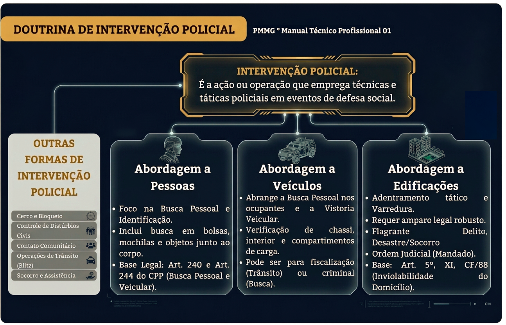
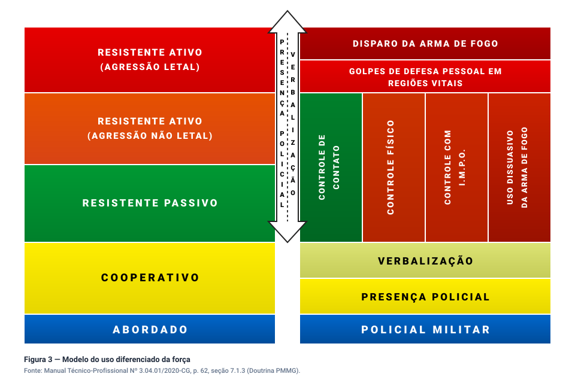
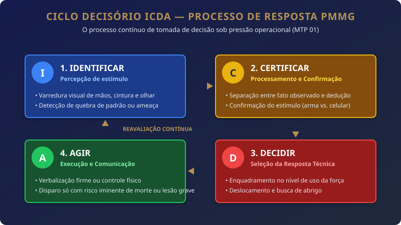

É a ação ou operação que emprega técnicas e táticas policiais em eventos de defesa social, com objetivo prioritário de promover e defender os direitos fundamentais da pessoa. Abrange desde uma orientação a um transeunte até a imobilização física, a algemação e o disparo de arma de fogo, sempre orientada pelos princípios do uso da força (MTP 01, seção 5).
Percurso Instrucional: formas e níveis de intervenção, as 4 etapas e a dinâmica de reavaliação contínua, modelo visual do UDF, análise de caso em vídeo, pós-confronto com foco na desescalada e processo mental sob estresse.
A abordagem policial é a forma de intervenção mais frequente e desenvolve-se contra pessoas, veículos ou edificações. Outras modalidades abrangem cerco e bloqueio, controle de distúrbios civis, contato comunitário, fiscalização de trânsito e ações de socorro.

🔍 Toque na imagem para ampliar ✕ Fechar ampliação (toque em qualquer lugar)Figura 1 — Intervenção policial: conceito e formas de abordagem. (Fonte: MTP 3.04.01/2020-CG — PMMG, seção 5)
O estado de prontidão deve ser rigorosamente compatível com o nível de risco. Em ambiente operacional não controlado, o policial não pode permanecer no estado relaxado (branco), pois saltar direto ao alarme pode gerar pânico (preto) e paralisia (MTP 01, seção 2):
Cenário: Situação de normalidade (patrulhamento ostensivo ordinário).
Postura: Vigilância 360° constante, identificação precoce de quebras de padrão e prontidão física sem desgaste excessivo.
Cenário: Problema concreto detectado e confronto provável.
Postura: Atenção focalizada, cálculo da resposta tática, localização imediata de abrigos balísticos e pedido de recobrimento.
Cenário: Risco real e resposta tática imediata indispensável.
Postura: Concentração na ameaça, verbalização enérgica integrada às técnicas de menor potencial ofensivo ou força potencialmente letal.
Os três níveis classificam a intervenção segundo a avaliação de risco do cenário, direcionando a postura e a prontidão da equipe (MTP 01, seção 5.1):
Finalidade: Ações preventivas, educativas e assistenciais.
Conduta: Patrulhamento ordinário e interação comunitária. A rotina não autoriza queda na vigilância 360°.
Finalidade: Verificação preventiva diante de indício de ameaça à segurança.
Conduta: Abordagens a pessoas ou veículos suspeitos. Admite buscas pessoais respaldadas na Fundada Suspeita.
Finalidade: Ação repressiva diante da certeza da infração e iminência de agressão.
Exemplos do MTP 01: Infrator avistado em flagrante atentado contra vítima; autor em perseguição policial ativa.
Postura: Prontidão máxima para emprego de força proporcional, com armas em pronto emprego sob cobertura mútua.
A classificação em Nível III não autoriza disparo automático. A resposta deve ser modulada conforme o comportamento do infrator (cooperativo, resistência passiva ou ativa letal), detalhado a seguir.
Toda intervenção policial-militar estrutura-se sob um método contínuo de quatro etapas encadeadas (MTP 01, seção 5.2):
Levantamento dos dados da ocorrência (motivo, abordado e ambiente) por meio da avaliação de risco e do pensamento tático.
Definição das atribuições na canga (Contato x Cobertura), métodos de abordagem, abrigos e escalonamento prévio da força.
Aplicação prática do plano em campo: verbalização imperativa, aproximação coordenada, busca pessoal ou contenção proporcional.
Análise contínua das condutas e resultados, permitindo a correção imediata em campo e o debriefing formativo pós-ação.
A intervenção policial não é um evento linear ou rígido; é um ciclo dinâmico contínuo. Observe o momento em que cada etapa ocorre e como a reavaliação comanda a adaptação tática:
Momento: Inicia-se antes do contato (leitura do despacho do rádio/COPOM, histórico criminal da área, horário) e consolida-se na aproximação visual.
Como opera: Aplicação do Quarteto do Pensamento Tático (área de segurança, área de risco, ponto de foco e ponto quente). O militar separa dados objetivos de deduções para classificar o nível de risco preliminar.
Momento: Imediatamente após o diagnóstico inicial, antes do desembarque da viatura ou antes de iniciar o contato/engajamento.
Como opera: A guarnição divide funções estritas (Policial de Contato verbaliza e comanda; Policial de Cobertura protege em 45º sem cruzar linhas de tiro), escolhe o setor de aproximação, antecipa abrigos balísticos e define os meios de força iniciais.
Momento: Durante a aproximação, comando verbal e interação direta com o abordado no terreno.
Como opera: Materialização técnica do plano: comandos em 3 tempos da PMMG, manutenção da distância de reação (Regra de Tueller), controle de contato, busca pessoal ou contenção proporcional.
Momento 1 — Em Campo (Reavaliação Imediata): Ocorre a cada fração de segundo durante a execução. O abordado acatou a ordem? Fez menção de sacar arma? Tentou fugir? A constatação de mudança no cenário OBRIGA O RETORNO IMEDIATO AO PLANO DE AÇÃO. A guarnição readequa na hora a tática: reclassifica o risco, ajusta o nível de força (escalada ou desescalada) e reposiciona a cobertura.
Momento 2 — Pós-Ação (Debriefing Operacional): Ocorre logo após o encerramento da ocorrência com toda a equipe reunida: o que funcionou, falhas percebidas, higidez física e subsídios para o BO/REDS.
Ciclo Operacional Contínuo: Diagnóstico ➔ Plano de Ação ➔ Execução ➔ Avaliação / Reavaliação ➔ Retorno ao Plano de Ação ➔ Nova Execução. Esse retorno constante ao Plano de Ação impede ações impulsivas e assegura que qualquer alteração de força seja fruto de uma decisão consciente, técnica e proporcional.
O modelo gráfico oficial da PMMG (MTP 01, seção 7.1.3) organiza o uso diferenciado da força através da correspondência direta entre a percepção do policial sobre a atitude do abordado (lado esquerdo) e as respostas operacionais proporcionais (lado direito). A seta dupla centralizada (sobe e desce) demonstra a dinâmica de avaliação contínua, reforçando que a Presença Policial e a Verbalização atuam permanentemente em todos os níveis:

🔍 Toque na imagem para ampliar ✕ Fechar ampliação (toque em qualquer lugar)Figura 2 — Modelo do uso diferenciado da força adotado pela PMMG. (Fonte: Manual Técnico-Profissional Nº 3.04.01/2020-CG, p. 62, seção 7.1.3 (Doutrina PMMG))
O policial militar fundamenta qualquer ação coercitiva em três princípios inegociáveis (MTP 01, seção 7):
Emprego de métodos e armamentos estritamente previstos em lei e homologados pela Instituição. É vedado o porte de munições ou armas particulares não autorizadas.
A força só pode ser aplicada quando for impossível resolver a crise por outros meios. Havendo perigo extremo, o policial pode aplicar direto o nível necessário sem percorrer os anteriores.
O nível de força deve ser compatível com a gravidade da agressão e com o objetivo legal pretendido, modulando-se dinamicamente conforme a ameaça aumente ou diminua.
Efetuar disparo de arma de fogo contra indivíduo que resiste passivamente, apenas questionando ordens ou recusando colocar mãos na cabeça durante a busca pessoal. A resposta adequada restringe-se à verbalização e ao controle de contato.
Empregar força potencialmente letal (disparo de arma de fogo) contra agressor que avança empunhando arma branca em distância de perigo, onde a verbalização e os instrumentos de menor potencial ofensivo foram ineficazes ou inoportunos.
Fonte dos exemplos: MTP 01, seção 7.1. O policial militar deve readequar continuamente o nível de força às variações do comportamento do agressor.
REGRA DE SEGURANÇA MÁXIMA: O dedo deve permanecer rigorosamente FORA DO GATILHO até a identificação conclusiva do alvo e a tomada consciente de decisão pelo disparo defensivo.
Observe a ocorrência real e analise o enquadramento no Nível III de intervenção e no Nível Secundário de força (IMPO):
Vídeo 1 — Perseguição policial a pé em via pública, disparo de dispositivo elétrico incapacitante (Taser amarelo) e contenção junto a veículo. (Fonte: Acervo da Curadoria CVT / PMMG)
O vídeo não registra o contexto anterior, o diálogo verbal nem o motivo originário da perseguição. A avaliação da proporcionalidade depende desses dados no momento da ação.
Princípio da Desescalada Instantânea: Cessada a resistência ou agressão, o nível de força deve ser regredido de imediato para modo custódia. A permanência do emprego de força após a neutralização constitui excesso punível (CP, art. 23, parágrafo único).
Executar varredura visual em 360° para quebrar a visão em túnel e descartar ameaças secundárias. Cessada a agressão armada, cessa-se imediatamente o emprego da arma de fogo ou força contundente, passando a guarnição ao controle e custódia segura.
Sob cobertura ativa dedicada do parceiro de canga, afastar instrumentos de agressão do alcance do suspeito. Havendo os requisitos da Súmula Vinculante nº 11, aplicar as algemas preferencialmente com as mãos para trás e palmas para fora, travando o mecanismo de segurança para evitar lesões ou solturas.
Providenciar socorro imediato à pessoa ferida (SAMU/Bombeiros ou condução direta), isolar o local e informar ao COPOM/CPU. A formalização no REDS é a garantia da higidez jurídica da atuação policial:
⚖️ Proteção Jurídica Operacional: A narrativa técnica da avaliação da ameaça somada à comprovação da desescalada instantânea no histórico do REDS constitui o principal respaldo da guarnição perante o Ministério Público e a Justiça Militar, comprovando que cada disparo ou técnica foi estritamente contido no limite da necessidade.
Enquanto o agressor percorre apenas três etapas cognitivas (Identificar, Decidir e Agir), o policial militar precisa percorrer quatro: Identificar, Certificar, Decidir e Agir (MTP 01, seção 4.2). A etapa de certificar confirma que a ameaça é real antes de qualquer disparo defensivo:

🔍 Toque na imagem para ampliar ✕ Fechar ampliação (toque em qualquer lugar)Figura 3 — Circuito do Ciclo Decisório ICDA sob estresse de combate. (Fonte: MTP 3.04.01/2020-CG — PMMG, seção 4.2)
Para compensar o atraso reacionário do ciclo ICDA, o MTP 01 estabelece cinco fatores que alongam a decisão do agressor e encurtam a resposta policial:
Dificulta ao agressor identificar a localização exata do policial militar.
Ação coordenada inesperada que quebra o tempo de reação do oponente.
Garante margem temporal para certificar e reagir (Regra de Tueller: 21 pés / 6,4 m contra arma branca).
Evita precipitações e impede que o policial se lance desnecessariamente na área de risco.
O fator primordial: utilização mandatória de anteparos que verdadeiramente detenham disparos balísticos.
Toque em uma alternativa para verificar o retorno doutrinário.
Toque em uma alternativa para verificar o retorno doutrinário.
Quatro casos reais em vídeo são dissecados à luz do MTP 01 e MTP 02: falha de travamento de algemas, tentativa de arrebatamento de arma em vegetação, entrada em confinamento com risco de fogo cruzado e contenção desestruturada por múltiplos militares. Finalize com a matriz técnica de redação do REDS.
O policial militar deve reclassificar de imediato o nível de risco para Nível III sempre que identificar ao menos uma destas três circunstâncias (MTP 01, seção 7.1.1):